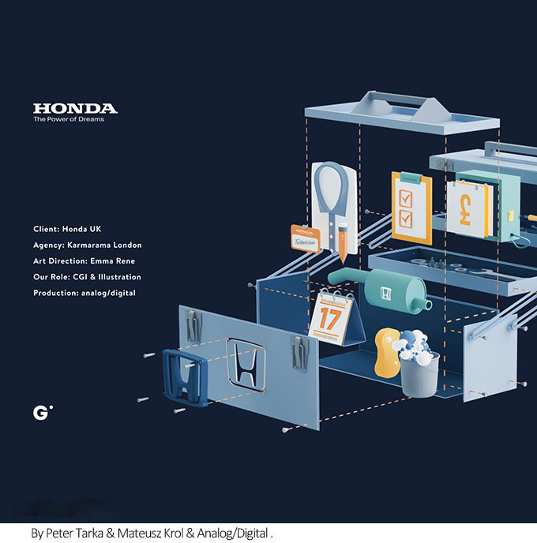

摘要: 广告设计思维与广告设计方法是相辅相成的！
广告设计思维与广告设计方法是相辅相成的，广告创造性思维是一种摆脱了习惯定式解决问题的思维方式，它需要鼓励在发散性思维的基础上进行聚合思维，创造性地解决问题，吸引观看者的眼球和意识。
横向思维
横向思维能使我们摆脱旧有的思维模式和思维习惯，有助于我们寻找尽可能多的不同的解题途径和思路。它可作为纵向思维的对立方式。纵向思维是要把同一口井继续挖深，横向思维则是要试试其它位置。从美术创作的角度看，如不同工具材料的运用，不同构图方法的表现，不同题材、内容的选择等形式都是要运用横向思维来创作。
求异思维
求异思维也是相对于常规思维来说的，其思维活动的要诀在于不受任何框架、模式的约束，从而突破传统观念和习惯势力的禁锢，从新的角度认识问题，以新的思路、新的方法解决现实难题或创造更好、更美的东西。逆向思维是求异思维的一种重要形式，也是众多创造性思维成果诞生的重要运思策略。我们从美术创作的角度看，如可以画花的生长或凋谢过程，可以把正视、俯视、仰视等结合起来在同一作品中，可以把一幅作品剪贴、随意粘贴、想象成另外的作品等形式都是要运用求异思维来创作。

想象思维
想象思维也是创造性思维的主要表现形式之一。想象思维是人体大脑通过形象化的概括作用，对脑内已有的记忆表象进行加工、改造或重组的思维活动。想象思维可以说是形象思维的具体化，是人脑借助表象进行加工操作的最主要形式，是人类进行创新及其活动的重要的思维形式。
想象思维有再造想象思维和创造想象思维之分。再造想象思维是指主体在经验记忆的基础上，在头脑中再现客观事物的表象；创造想象思维则不仅再现现成事物，而且创造出全新的形象。我们从美术创作的角度看，如可以创作飞翔的人，可以创作把地球放在手上，也可以创作动植物组合成新的生物等形式都是要运用想象思维来创作。

发散思维
突破常规是创造型思维的本质所在，这一点在发散思维中表现得十分明显。 “正是在发散思维中，我们看到了创造性思维最明显的标志。”发散思维是指从一个目标出发，沿着各种不同的途径去思考，探求多种答案的思维，与聚合思维相对。
直觉思维
直觉思维是相对于逻辑思维来说的，它是指人们不经过逐步分析而迅速对问题的答案做出合理猜测或突然顿悟的思维形式。直觉思维着眼于对研究对象的整体性把握，它与逻辑思维强调对研究对象的局部性分析是很不同的。直觉思维能力强的人常常会从一些偶然事件中突然领悟问题的实质。
以下广告设计创新方法！
现实
消费者不是一个可以任意施加影响的消极主体，而是一个具有一定的要求、信念、定势和意向，有着判断是非标准的积极客体，他们对广告的内容完全是根据自己要求的价值标准加以摄取或排斥的。所以，说实话、抒真情是广告的生命，是赢得受众的本质力量，也是对社会负责，对消费者负责的表现。

谐趣幽默
幽默是生活和艺术中的一种特殊的喜剧因素，又是能在生活和艺术中表达或再现喜剧因素的一种能力。它通过比喻、夸张、象征、寓意、双关、谐音、谐意等手法，运用机智、风趣、凝练的语言对社会生活中不合理、自相矛盾的事物或现象作轻微含蓄的揭露、批评、揶喻和嘲笑，使人在轻松的微笑中否定这些事物或现象。
幽默广告之所以受人们的喜爱，根源在于其独特的美学特征与审美价值，它运用“理性的倒错”等特殊手法，通过对美肯定和对丑的嘲异两种不同质的情感复合，创造出一种充满情趣而又耐人寻味的幽默境地，促使接受者直觉地领悟到它所表达的真实概念和态度，从而产生一种会心微笑的特殊审美效果，感性诉求广告正是通过幽默的情趣谈化了广告的直接功利性，使消费者在欢笑中自然而然、不知不觉地接受某种商业和文化信息，从而减少了人们对广告所持的逆反心理，增强了广告的感染力。
理性浪漫
感性诉求广告创作的一个最基本的条件就是要具有创作的冲动，在广告中表现激情，只有在这种情感状态下才能够创作出优秀的作品。在感性诉求广告创作中，情感始终起着重要的作用。但是，我们知道，感性诉求广告不同于一般的艺术创作，它的目的是促进消费，它的目标受众是消费者。
因此在进行感性诉求广告的创作时，我们鼓励宣泄激情，但这种激性的宣泄又必须在一定的理智控制之下进行，这就是我们所说的“理性浪漫”，只有这样它才能把主体内在的浓烈的情感作为对象纳入一定的视觉形式之中，使之对象化和物态化，成为有意义的形式。
艺术表现
感性诉求广告的目标受众是消费者，在人们的社会心理和市场竞争日新月异的今天，它的表现形式更应该向艺术化的方向发展。今日的消费者不再是纯粹的追求物质满足，他们不仅要求广告能告之他们信息，而且要求有艺术性和娱乐性，满足其心理上的审美需要，所以，没有强撼的艺术感染力的广告是很难与消费者产生情感共鸣的。
众多的广告活动表明，具有极强的艺术性和表现力的广告总是容易引起消费者的注意与兴趣，起到引导消费的作用。因为它使人们在获得信息的同时得到了艺术美的享受，正因为具有艺术表现力，它才能造成一种生气勃勃、富于情趣的意境，才能极大地增强了广告作品的吸引力和感染力。
在感性诉求广告中可运用的艺术表现手法很多，除了我们前面所提到的谐趣幽默外，还有对比、抒情、夸张、比喻和联想等，应在不同的场合下运用不同的创意以期达到预期的目的。

济南海右博纳品牌营销咨询有限公司
Copyright 2001-2019 All Rights Reserved Sivibrand.
王伟品牌顾问微信